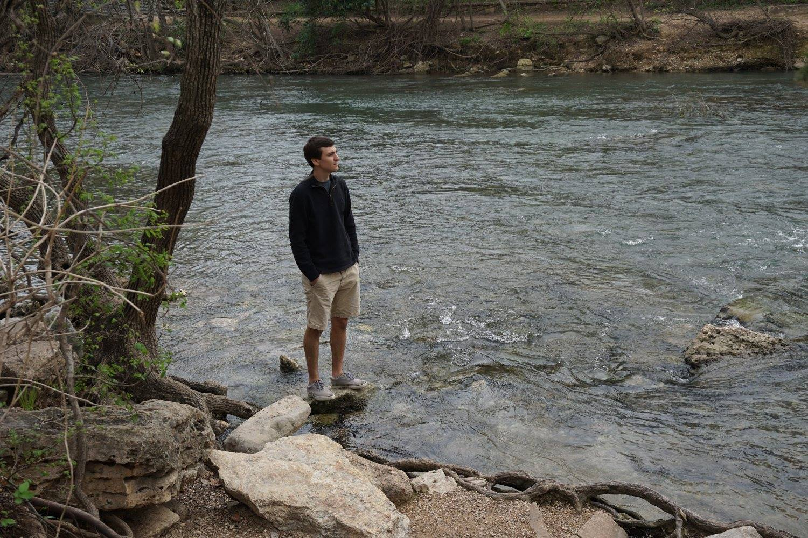

 My name is Charles Boothby, most friends call me Charlie. I am a Digital Arts and Sciences graduate from the University of Florida. I have enjoyed working with a great group of students and faculty to make various projects and expand my skills. While I have found 3D animation to be the most enjoyable, I love working in several subjects such as 2D animation, video editing, production, coding, and game design. I have learned a lot and very much enjoyed all of my personal projects. However, in my experience, group projects have been the most fun with the best outcome. My ideas flourish when they are inspired by and/or bounced off others.
In my free time, I like to spend time with friends and family, both in person and through online games. On my own, I enjoy playing video games, music, and sports. I used to play team sports, but now I like to leisureley play pick-up games of basketball, volleyball, etc. I also love to travel! Not that I do it a lot, but when I do, I love it! I am a big fan of nature, and enjoy being out in parks, mountains, lakes, rivers, etc. Since animating (and video games) have me spending lots of time indoors with technology, I find it nice to get outside and away from things every once in a while.
| Contact Me! | charlesmboothby@gmail.com | (941)962-0636 |
|---|